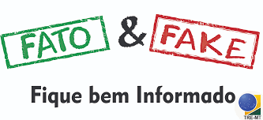
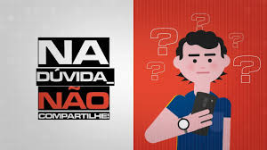

P
E
D
R
O
T
I
P
S
Como Identificar
Notícias são uma forma comum de se informar não é? Todos nós sabemos que nem tudo que vemos é verdade. Mas você já se encontrou em uma situação na qual você não sabia dizer se o que você estava lendo tinha algum fundamento? Claro que sim! Não te preocupa pensar que isso é um cenário tão comum na atualide? Como você pode usar a internet para pesquisar se qualquer coisa pode ser forjada? Nem tudo é tão perigoso, mas se você se descuidar pode acabar sendo mais uma vítima dessa corrente de desinformação. Se isso assusta você, o que pensa sobre nos acompanhar e aprender algumas dicas sobre essa problemática tão intrigante? Mesmo que você esteja aqui apenas pelo entreterimento, esperamos conseguir ajuda-lo.
Dentro da internet, nós nos deparamos com diversos estímulos, seja você um usuário ou um criador. Sejamos francos, se você pudesse mentir um pouco para ganhar cliques, você não se sentiria tentado? Como usuário, nós sempre devemos ter isso em mente quando lemos um conteudo cujo as fontes não confiamos ou desconhecemos. Já como criador, o cuidado deve ser dobrado, afinal você também pode se tornar uma fonte, se os motivos morais não te convencerem a evitar a oportunidade de ganhar alguns cliques, lembre-se dos problemas legais que podem ser evitados.
Exemplos
Aqui nós trouxemos dois exemplos para abrir um pouco mais a discussão sobre as fake news.
A primeira figura fala sobre a mentira que estava sendo divulgada durante a distribuição da vacina da covid-19. Parece surreal pensar que alguém acreditaria não é mesmo? Mas a problemática não morre no momento que alguém duvida, uma fake news "besta" pode alanvancar em ainda mais desconfiança "Se não fizeram nada quanto aquela piada, e se essa outra coisa for verdade?", muitas coisas podem surgir a partir de uma fake news, sem mencionar as pessoas que podem ter acreditado na mesma pelo pânico da pandemia e todos os acontecimentos relacionados.
A segunda imagem foi pra algo mais prático, enquanto a primeira era fácil de se identificar, a segunda (ainda é fácil por causa das repercursões) não é tão simples assim. Se trata de uma página de noticias, e como você ja deve ter imaginado, são enganosas. Desse exemplo, queriamos apontar a ferramenta de distribuiçao da mesma, que é uma rede social. Redes sociais são um problema porquê o feedback muitas vezes pode recompensar as pessoas que mentem. Visualizações, curtidas e compartilhamentos podem até mesmo se tornar em patrocinadores. Se você está em uma rede social, lembre-se, você não é o cliente, é o produto.
Tendo-se o contexto desses exemplos, você conseguiu identificar os padrôes? Você se sentiu incomodado com essas situações? Você aprendeu algo? Sendo indignante ter que lidar com a existencia das fake news, devemos sempre estar atentos e denuncia-las para evitar tamanho desgosto novamente.


Para não encerrarmos com gosto amargo. Viemos trazer algumas formas de você se interar sobre o que te confunde. Mais cedo foi mencionado sobre fontes não confiaveis, lembra? Queriamos trazer um pouco de esperança para você o "leitor" mostrando uma fonte que raramente é irresponsável. Se você não tiver visto ainda, é a página "Fato ou fake" do G1. Ela serve o propósito de desmentir conteúdo enganoso. Mesmo sendo possivel enviar para eles os video duvidoso e rezar pra descobrirem pra você, o ponto em estarmos te direcionando para ela é porquê além de desmintir, eles geralmente mostram os métodos usados para julgar o conteúdo como forjado/falso.